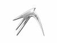

LXDE Installation
Dieser Artikel wurde für die folgenden Ubuntu-Versionen getestet:
Ubuntu 17.10 Artful Aardvark
Ubuntu 16.04 Xenial Xerus
Zum Verständnis dieses Artikels sind folgende Seiten hilfreich:
 Es gibt verschiedene Wege, LXDE zu installieren. Man sollte aber beachten, dass die Desktop-Umgebung LXDE und Lubuntu (Ubuntu mit LXDE) hinsichtlich der installierten Programme nicht identisch sind.
Bisher existiert in diesem Wiki keine spezielle Installationsanleitung für Lubuntu. Man kann sich aber an der Anleitung für Xubuntu orientieren. Besitzer älterer Rechner sollten beachten, dass i586-Prozessoren (Intel Pentium MMX, AMD K6-2 und vergleichbare) bereits seit 10.10/Kernel 2.6.35 nicht mehr unterstützt werden. Auf Rechnern mit CPUs ohne PAE haben Lubuntu sowie weitere Ubuntu-Derivate 12.10 bis einschließlich 13.10 nicht installiert werden können bzw. nur mit Tricks (weitere Informationen). Erst seit Ubuntu bzw. -Derivate 14.04 ist es mit der Bootoption forcepae teilweise wieder möglich, diese Beschränkung zu umgehen.
Auch auf USB-Sticks und anderen externen Speichermedien mit einer Größe von mindestens 4 GiB lässt sich Lubuntu ohne weiteres installieren. Eine Standardinstallation belegt davon nur ca. 2 GiB. Die konkrete Vorgehensweise ist im Artikel Installation auf externen Speichermedien beschrieben.
Achtung!
Für die Installation von Lubuntu seit 14.04 auf einem älteren Notebook mit Prozessor ohne PAE wird eine entsprechende Bootoption benötigt. Dazu betätigt man vor dem Start von Lubuntu die Taste F6 , um die Zeile mit den Bootoptionen sichtbar zu machen. Dann navigiert man mit den Pfeiltasten zum gewünschten Eintrag "Lubuntu ohne Installation ausprobieren" oder "Lubuntu installieren" und ergänzt den Parameter
forcepaeam Ende der Zeile. Der Start erfolgt dann mit ⏎ .
Experten-Info:
Dieser Artikel beschreibt die Arbeitsschritte einer Installation im BIOS-Modus. Man sollte sich vorab darüber informieren, ob der Rechner mit einem EFI Bootmanagement versehen ist und wie die Festplatte(n) formatiert worden sind. Weitere Informationen stehen unter EFI Grundlagen zur Verfügung.
Lubuntu¶
DVD-Installation¶
Lubuntu wird wie zuvor Kubuntu oder Xubuntu seit der Version 11.10 offiziell von Canonical unterstützt. Damit einher geht die Veröffentlichung einer Desktop-CD/DVD für 32- und 64-bit-Systeme sowie jeweils einer Alternate install CD/DVD. Download-Möglichkeiten sind im Artikel Downloads (nach Auswahl der Ubuntu-Version) oder über die offizielle Homepage  zu finden.
zu finden.
Laufendes System¶
Hinweis:
Die parallele Installation mehrerer Desktop-Umgebungen kann zu unerwünschten Nebeneffekten führen. Einstellungen des Themas, Schriftbildes, Panels, der Icons usw. können andere Desktop-Umgebungen negativ beeinflussen. Für das reine Ausprobieren einer alternativen Desktop-Umgebung empfiehlt sich daher die Nutzung eines Live-Systems per DVD oder USB-Stick.
Lubuntu kann man auf einem laufenden System durch folgendes Metapaket nachträglich installieren [1]:
lubuntu-desktop (universe)
 mit apturl
mit apturl
Paketliste zum Kopieren:
sudo apt-get install lubuntu-desktop
sudo aptitude install lubuntu-desktop
Dabei ist es unerheblich, ob es sich um eine Minimalinstallation handelt oder bereits eine andere Desktop-Umgebung installiert ist.
Neben der Desktop-Umgebung LXDE werden durch Lubuntu zusätzliche Programme installiert. Eine Übersicht über die vorinstallierten Anwendungen erhält man hier. Wer auf diese verzichten und die Installation selbst anpassen möchte, kann stattdessen folgendes Paket installieren:
lubuntu-core (universe, seit Ubuntu 10.10)
mit apturl
Paketliste zum Kopieren:
sudo apt-get install lubuntu-core
sudo aptitude install lubuntu-core
LXDE¶
Die Installation von LXDE – nur die Desktop-Umgebung, keine zusätzlichen Programme wie bei Lubuntu – ist ebenfalls direkt aus den Paketquellen möglich. Folgendes Paket muss installiert [1] werden:
lxde (universe)
mit apturl
Paketliste zum Kopieren:
sudo apt-get install lxde
sudo aptitude install lxde
Noch schlanker ist das Paket lxde-core, das außer dem LXPanel keine weiteren Anwendungen enthält (auch keine LXDE-Programme).
Problembehebung¶
Netzwerk-Manager¶
Während Lubuntu wie Ubuntu und Xubuntu den NetworkManager einsetzt, verzichtet das "reine" LXDE auf derlei Beigaben. Hier gibt es prinzipiell zwei Lösungen: den erwähnten NetworkManager oder Wicd installieren. Details sind den jeweiligen ausführlichen Wiki-Artikeln zu entnehmen.
Gasterweiterungen für Virtualbox¶
Sollte die Installation der Gasterweiterungen innerhalb VirtualBox' fehlschlagen, ist DKMS nachzuinstallieren.
Automatische Updates¶
Das Verhalten der automatischen Updates kann auch mittels der graphischen Oberfläche "Gnome Update Manager" beeinflusst werden. Das Programm wird offiziell von Canonical unterstützt. Dazu ist ggf. innerhalb von Synaptic das Paket update-manager nachzuinstallieren.
Links¶
One Button Installer
- Fake-PAE-Installationsmedien für Lubuntu 13.04 und 13.10
Lubuntu 11.10 Install/Tweak Guide
- enthält einige über die Installation hinausgehende Tipps zur Desktop-GestaltungInstallation
 - Übersichtsseite mit allen Installationsanleitungen
- Übersichtsseite mit allen Installationsanleitungen

- Erstellt mit Inyoka
-
 2004 – 2017 ubuntuusers.de • Einige Rechte vorbehalten
2004 – 2017 ubuntuusers.de • Einige Rechte vorbehalten
Lizenz • Kontakt • Datenschutz • Impressum • Serverstatus -
Serverhousing gespendet von